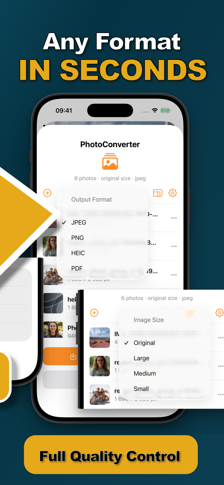

Expense reports want “one PDF, please.” So do visa applications, insurance claims, landlords, and HR departments. What you have is six photos of receipts in your camera roll. Bridging that gap shouldn't require a scanner app subscription or uploading your paperwork to a website.
The Paperwork Problem
Photos of documents are how everyone actually captures paperwork — quick, good enough quality, always in your pocket. The friction is at submission time: portals and email chains want a single document, in order, not a scatter of JPGs and HEICs. A photos-to-PDF conversion is the missing step.
Photos to One PDF (Step by Step)
- Select the document photosIn Photos, select the receipts, ID pages, or paperwork shots — in the order you want them to appear as pages.
- Share to Photo ConverterTap Share → “Convert with PhotoConverter.”
- Choose PDF as the output formatThe selected photos are combined into a single PDF document.
- Convert and share the PDFSave it to Files or share it straight into the email or portal that asked for it.

Sensitive Documents Deserve On-Device
Receipts show what you bought; IDs show everything. This is exactly the material that shouldn't pass through a free converter website's servers. Photo Converter builds the PDF 100% on-device — and while you're at it, consider stripping the metadata from document photos too, since it can carry timestamps and location.
Try it on your own photos
Photo Converter is free to download with a 3-day free trial — convert your first batch in the next two minutes, without anything leaving your phone.
Get Photo Converter on the App Store